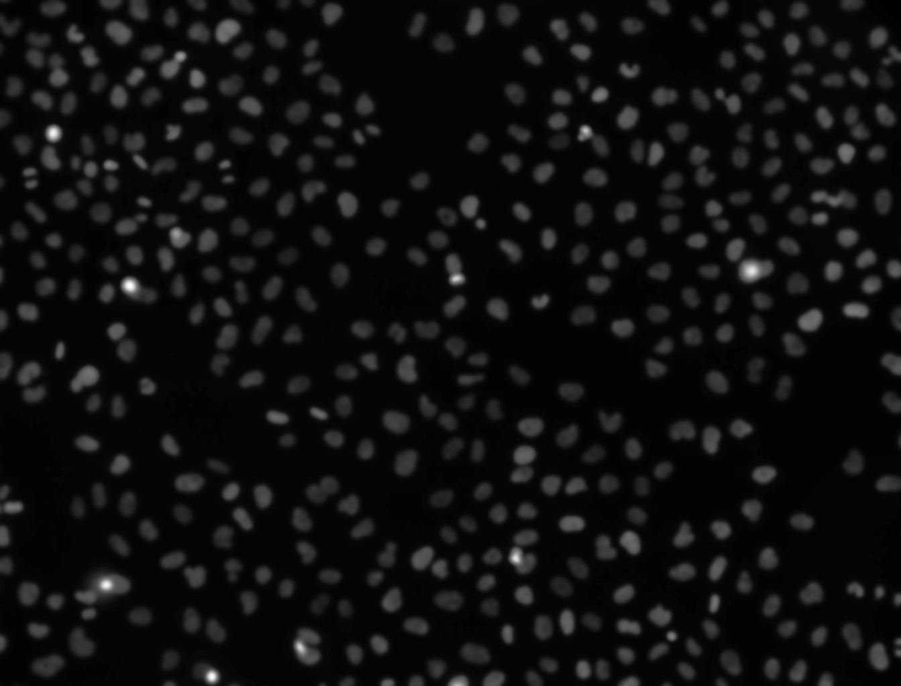
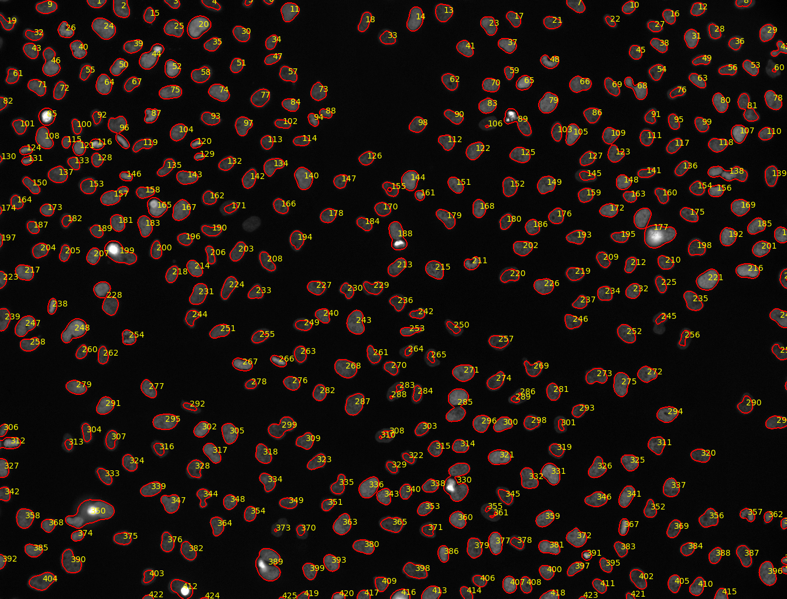

Introduction to image analysis using Galaxy

 Thomas Wollmann
Thomas Wollmann Saskia Hiltemann
Saskia Hiltemann
OverviewQuestions:Objectives:
How do I use Galaxy with imaging data?
How do I convert images using Galaxy?
How do I display images in Galaxy?
How do I filter images in Galaxy?
How do I segment simple images in Galaxy?
Requirements:
How to handle images in Galaxy.
How to perform basic image processing in Galaxy.
Time estimation: 1 hourLevel: Introductory IntroductorySupporting Materials:Last modification: Feb 3, 2023
 Questions:
Questions:
Introduction
Image analysis is the extraction of meaningful information from images by means of digital image processing techniques. Imaging is an important component in a wide range of scientific fields of study, such as astronomy, medicine, physics, biology, geography, chemistry, robotics, and industrial manufacturing.
This tutorial shows how to use Galaxy to perform basic image analysis tasks such as format conversion, image enhancement, segmentation, and feature extraction.
AgendaIn this tutorial, we will deal with:
Getting data
The dataset required for this tutorial is available from Zenodo and contains a screen of DAPI stained HeLa nuclei (more information). We will use a sample image from this dataset for training basic image processing skills in Galaxy.
Our objective is to automatically count the number of cells contained in this image. In order to achieve this, we will enhance the quality of the image, automatically detect the nuclei and segment the nuclei and count them.
Hands-on: Data upload
If you are logged in, create a new history for this tutorial
Click the new-history icon at the top of the history panel.
If the new-history is missing:
- Click on the galaxy-gear icon (History options) on the top of the history panel
- Select the option Create New from the menu
- Import the following dataset from Zenodo or from the data library (ask your instructor).
- Important: Choose the type of data as
zip.https://zenodo.org/record/3362976/files/B2.zip
- Copy the link location
Open the Galaxy Upload Manager (galaxy-upload on the top-right of the tool panel)
- Select Paste/Fetch Data
Paste the link into the text field
Press Start
- Close the window
As an alternative to uploading the data from a URL or your computer, the files may also have been made available from a shared data library:
- Go into Shared data (top panel) then Data libraries
- Navigate to the correct folder as indicated by your instructor
- Select the desired files
- Click on the To History button near the top and select as Datasets from the dropdown menu
- In the pop-up window, select the history you want to import the files to (or create a new one)
- Click on Import
- Unzip file tool with the following parameters:
- param-file “input_file”:
Zippedinput file- “Extract single file”:
Single file- “Filepath”:
B2--W00026--P00001--Z00000--T00000--dapi.tifRename galaxy-pencil the dataset to
input.tif
- Click on the galaxy-pencil pencil icon for the dataset to edit its attributes
- In the central panel, change the Name field
- Click the Save button
Image Metadata Extraction
Now, we can extract metadata from an image.
Hands-on: Extract Image Metadata
- Image Info tool with the following parameters to extract metadata from the image:
- param-file “Input Image”:
input.tiffile (output of the previous step)Click on the galaxy-eye (eye) icon next to the file name, to look at the file content and search for image acquisition information
Question
- What is the datatype?
- What are the pixel dimentions?
- How many bits per pixel are used?
- TIFF
- 1344x1024
- 16
Image Conversion
Not all tools can handle all image formats. Especially proprietary microscope image formats should be converted to TIFF (supported formats). However, TIFF can not be displayed in the browser. Therefore, we convert input.tif to a PNG for visualization.
Hands-on: Convert Image
- Convert image tool with the following parameters to convert the image to PNG:
- param-file “Input Image”:
input.tiffile- “Output data type”:
PNG- Rename galaxy-pencil the generated file to
viz_input- Click on the galaxy-eye (eye) icon next to the file name to look at the file content
Your image should look something like this:

QuestionYou can observe that the image content is barely visible. Why?
The original image is 16-bit and the intensity values are spread over a larger range than the display can render. Therefore, for improved visibility the intensity histogram of the image can be normalized first.
Next we will normalize the histogram to improve the contrast. We do this using a Contrast Limited Adaptive Histogram Equalization (CLAHE) approach.
Hands-on: Normalize Histogram and Convert Image
- Histogram equalization tool with the following parameters to normalize the histogram of the image:
- param-file “Source file”:
input.tiffile- “Histogram Equalization Algorithm”:
CLAHE- Rename galaxy-pencil the generated file to
input_normalized- Convert image tool with the following parameters to convert the image to PNG:
- param-file “Input Image”:
input_normalizedfile (output of Histogram equalization tool)- “Output data type”:
PNG- Rename galaxy-pencil the generated file to
viz_normalized- Click on the galaxy-eye (eye) icon next to the file name, to look at the file content
Your image should now look something like this:

We can now clearly make out the presence of the stained nuclei. Next we will automatically detect these features and segment the image.
Image Filtering
Specific features of interest (e.g., edges, noise) can be enhanced or suppressed by using an image filter.
Hands-on: Filter image
- Filter Image tool with the following parameters to smooth the image:
- “Image type”:
Gaussian Blur- “Radius/Sigma”:
3- param-file “Source file”:
input.tiffile- Rename galaxy-pencil the generated file to
input_smoothed- Histogram equalization tool with the following parameters to normalize the histogram of the image:
- param-file “Source file”:
input_smoothedfile (output of Filter image tool)- “Histogram Equalization Algorithm”:
CLAHE- Rename galaxy-pencil the generated file to
input_smoothed_normalized- Convert image tool with the following parameters to convert the image to PNG:
- param-file “Input Image”:
input_smoothed_normalizedfile (output of Histogram equalization tool)- “Output data type”:
PNG- Rename galaxy-pencil the generated file to
viz_smoothed_normalized- Click on the galaxy-eye (eye) icon next to the file name, to look at the file content and compare the result with
viz_normalized. You can observe thatviz_smoothed_normalizedhas significant reduced noise.
Your image should now look something like this:

Segmentation
Objects of interest like nuclei can be segmented by using a smoothed image and thresholding. Moreover, the results can be overlayed with the original image.
Hands-on: Segment image
- Auto Threshold tool with the following parameters to segment the image:
- param-file “Source file”:
input_smoothedfile (output of Filter image tool)- “Threshold Algorithm”:
Otsu- “Dark Background”:
Yes- Rename galaxy-pencil the generated file to
input_segmented- Binary 2 Label tool with the following parameters to segment the image:
- param-file “Binary Image File”:
input_segmentedfile (output of Auto Threshold tool)- Rename galaxy-pencil the generated file to
input_segmented_labeled- Convert image tool with the following parameters to convert the image to PNG:
- param-file “Input Image”:
input_segmented_labeledfile (output of Binary 2 Label tool)- “Output data type”:
PNGRename galaxy-pencil the converted image to
viz segmentedQuestion
- What does Binary 2 Label tool do? (Hint: check the tool help section)
- View the
viz_segmentedimage from the last step, what do you see?
- Can you explain this result?
- Exercise: Try to make the information in this image better visible (Hint: Histogram Equalization tool)
- The tool assigns each connected component (e.g., segmented cell) in the image an object id and stores it as the intensity value.
- The image looks completely black. The object IDs generated by Binary 2 Label tool are relatively low. Since the IDs are stored as intensity values, these are too low to be visible in this case. Nevertheless, there is more information in this image than meets the eye.
To make labeled objects visible, the values have to be stretched to a larger range of visible intensity values. We can do that by equalizing the histogram again:
- Histogram equalization tool with the following parameters to normalize the intensity values:
- param-file “Source file”:
input_segmented_labeledfile (output of Binary 2 Label tool)- “Histogram Equalization Algorithm”:
CLAHE- Convert image tool with the following parameters to convert the image to PNG:
- param-file “Input Image”: output of Histogram Equalization tool
- “Output data type”:
PNGThe information contained in the original image has now become visible to the human eye:
- Overlay Segmentation Mask tool with the following parameters to convert the image to PNG:
- param-file “Image Source File”:
viz_normalizedfile- param-file “Mask Source File”:
viz_segmentedfile- “Image Is Greyscale”:
Yes- “Thickness”:
3- “Stroke Color”:
red- “Plot Labels”:
yes- “Label Color”:
yellow- Click on the galaxy-eye (eye) icon next to the file name, to look at the file content and assess the segmentation performance
- Count Objects tool with the following parameters to count the segmented objects in the image:
- param-file “Source file”:
input_segmented_labeledfile (output of Binary 2 Label tool)QuestionHow many objects were segmented?
The Count Objects tool tool counted 425 objects.

The resulting image should look something like this:

We see the segmentation mask overlayed; each detected object (nucleus) is labeled with its ID value.
We see that with the help of just a few simple steps, we were able to detect the locations of the stained nuclei, and count them.
Conclusion
In this exercise you imported images into Galaxy, extracted meta information from an image, converted between file formats, learned how to visualize microscopy images, filtered the image, and segmented cells using Galaxy.
Key points
The Image Info tool can provide valuable metadata information of an image.
TIFF files can not directly viewed in the browser, but have to be converted.
For visualization, images with a bit-depth more than 8-bit have to be histogram equalized.
Frequently Asked Questions
Have questions about this tutorial? Check out the tutorial FAQ page or the FAQ page for the Imaging topic to see if your question is listed there. If not, please ask your question on the GTN Gitter Channel or the Galaxy Help ForumUseful literature
Further information, including links to documentation and original publications, regarding the tools, analysis techniques and the interpretation of results described in this tutorial can be found here.
Feedback
Did you use this material as an instructor? Feel free to give us feedback on how it went.
Did you use this material as a learner or student? Click the form below to leave feedback.

Citing this Tutorial
- Thomas Wollmann, Saskia Hiltemann, Introduction to image analysis using Galaxy (Galaxy Training Materials). https://training.galaxyproject.org/training-material/topics/imaging/tutorials/imaging-introduction/tutorial.html Online; accessed TODAY
- Batut et al., 2018 Community-Driven Data Analysis Training for Biology Cell Systems 10.1016/j.cels.2018.05.012
Congratulations on successfully completing this tutorial!@misc{imaging-imaging-introduction, author = "Thomas Wollmann and Saskia Hiltemann", title = "Introduction to image analysis using Galaxy (Galaxy Training Materials)", year = "", month = "", day = "" url = "\url{https://training.galaxyproject.org/training-material/topics/imaging/tutorials/imaging-introduction/tutorial.html}", note = "[Online; accessed TODAY]" } @article{Hiltemann_2023, doi = {10.1371/journal.pcbi.1010752}, url = {https://doi.org/10.1371%2Fjournal.pcbi.1010752}, year = 2023, month = {jan}, publisher = {Public Library of Science ({PLoS})}, volume = {19}, number = {1}, pages = {e1010752}, author = {Saskia Hiltemann and Helena Rasche and Simon Gladman and Hans-Rudolf Hotz and Delphine Larivi{\`{e}}re and Daniel Blankenberg and Pratik D. Jagtap and Thomas Wollmann and Anthony Bretaudeau and Nadia Gou{\'{e}} and Timothy J. Griffin and Coline Royaux and Yvan Le Bras and Subina Mehta and Anna Syme and Frederik Coppens and Bert Droesbeke and Nicola Soranzo and Wendi Bacon and Fotis Psomopoulos and Crist{\'{o}}bal Gallardo-Alba and John Davis and Melanie Christine Föll and Matthias Fahrner and Maria A. Doyle and Beatriz Serrano-Solano and Anne Claire Fouilloux and Peter van Heusden and Wolfgang Maier and Dave Clements and Florian Heyl and Björn Grüning and B{\'{e}}r{\'{e}}nice Batut and}, editor = {Francis Ouellette}, title = {Galaxy Training: A powerful framework for teaching!}, journal = {PLoS Comput Biol} Computational Biology} }
Do you want to extend your knowledge? Follow one of our recommended follow-up trainings:
- Imaging
- Analyse HeLa fluorescence siRNA screen: tutorial hands-on